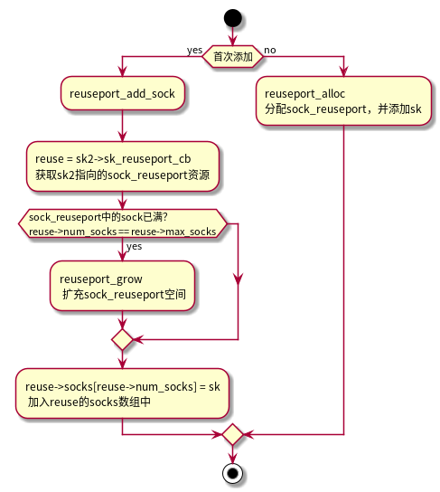
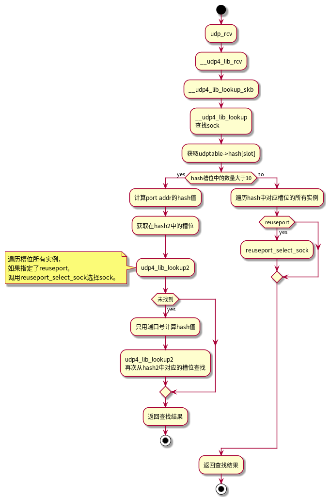
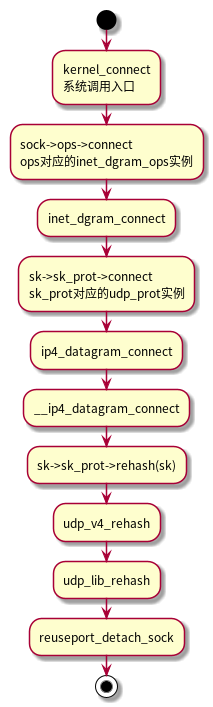

Linux reuseport
Table of Contents
1. TCP reuseport
2. UDP reuseport
2.1. 相关结构
struct proto udp_prot = { .name = "UDP", .owner = THIS_MODULE, .close = udp_lib_close, .connect = ip4_datagram_connect, .disconnect = udp_disconnect, .ioctl = udp_ioctl, .destroy = udp_destroy_sock, .setsockopt = udp_setsockopt, .getsockopt = udp_getsockopt, .sendmsg = udp_sendmsg, .recvmsg = udp_recvmsg, .sendpage = udp_sendpage, .backlog_rcv = __udp_queue_rcv_skb, .release_cb = ip4_datagram_release_cb, .hash = udp_lib_hash, .unhash = udp_lib_unhash, .rehash = udp_v4_rehash, .get_port = udp_v4_get_port, .memory_allocated = &udp_memory_allocated, .sysctl_mem = sysctl_udp_mem, .sysctl_wmem = &sysctl_udp_wmem_min, .sysctl_rmem = &sysctl_udp_rmem_min, .obj_size = sizeof(struct udp_sock), .h.udp_table = &udp_table, #ifdef CONFIG_COMPAT .compat_setsockopt = compat_udp_setsockopt, .compat_getsockopt = compat_udp_getsockopt, #endif .diag_destroy = udp_abort, } const struct proto_ops inet_dgram_ops = { .family = PF_INET, .owner = THIS_MODULE, .release = inet_release, .bind = inet_bind, .connect = inet_dgram_connect, .socketpair = sock_no_socketpair, .accept = sock_no_accept, .getname = inet_getname, .poll = udp_poll, .ioctl = inet_ioctl, .listen = sock_no_listen, .shutdown = inet_shutdown, .setsockopt = sock_common_setsockopt, .getsockopt = sock_common_getsockopt, .sendmsg = inet_sendmsg, .recvmsg = inet_recvmsg, .mmap = sock_no_mmap, .sendpage = inet_sendpage, .set_peek_off = sk_set_peek_off, }; static const struct net_protocol udp_protocol = { .early_demux = udp_v4_early_demux, .handler = udp_rcv, .err_handler = udp_err, .no_policy = 1, .netns_ok = 1, };
2.2. udp_table
/** * struct udp_table - UDP table * * @hash: hash table, sockets are hashed on (local port) * @hash2: hash table, sockets are hashed on (local port, local address) * @mask: number of slots in hash tables, minus 1 * @log: log2(number of slots in hash table) */ struct udp_table { struct udp_hslot *hash; struct udp_hslot *hash2; unsigned int mask; unsigned int log; };
2.3. inet_bind
2.3.1. udp_lib_get_port
udp_prot 的get_port成员是udp_v4_get_port函数， 该函数会调用 udp_lib_get_port。
int udp_v4_get_port(struct sock *sk, unsigned short snum) { unsigned int hash2_nulladdr = udp4_portaddr_hash(sock_net(sk), htonl(INADDR_ANY), snum); unsigned int hash2_partial = udp4_portaddr_hash(sock_net(sk), inet_sk(sk)->inet_rcv_saddr, 0); /* precompute partial secondary hash */ udp_sk(sk)->udp_portaddr_hash = hash2_partial; return udp_lib_get_port(sk, snum, ipv4_rcv_saddr_equal, hash2_nulladdr); }
/** * udp_lib_get_port - UDP/-Lite port lookup for IPv4 and IPv6 * * @sk: socket struct in question * @snum: port number to look up * @saddr_comp: AF-dependent comparison of bound local IP addresses * @hash2_nulladdr: AF-dependent hash value in secondary hash chains, * with NULL address */ int udp_lib_get_port(struct sock *sk, unsigned short snum, int (*saddr_comp)(const struct sock *sk1, const struct sock *sk2, bool match_wildcard), unsigned int hash2_nulladdr);

2.3.2. udp_reuseport_add_sock
udp_reuseport_add_sock首先进行一系列检查：
- 如果未是首次添加，则调用reuseport_alloc分配资源。
- 如果已经添加过，则调用reuseport_add_sock加入reuse端口组。

2.4. udp_rcv

2.4.1. reuseport_select_sock
从reuseport组中选择一个sock。
struct sock *reuseport_select_sock(struct sock *sk, u32 hash, struct sk_buff *skb, int hdr_len) { struct sock_reuseport *reuse; struct bpf_prog *prog; struct sock *sk2 = NULL; u16 socks; rcu_read_lock(); reuse = rcu_dereference(sk->sk_reuseport_cb); prog = rcu_dereference(reuse->prog); socks = READ_ONCE(reuse->num_socks); if (likely(socks)) { /* paired with smp_wmb() in reuseport_add_sock() */ smp_rmb(); if (prog && skb) //运行bpf过滤器来选择sock （sk_reuseport_attach_bpf） sk2 = run_bpf(reuse, socks, prog, skb, hdr_len); else//根据hash值从reuse中选择一个sock sk2 = reuse->socks[reciprocal_scale(hash, socks)]; } out: rcu_read_unlock(); return sk2; }
2.4.2. bpf注册
通过 setsockopt 函数可以注册reuseport 的bpf过滤器。
设置的套接字属性： SO_ATTACH_REUSEPORT_EBPF
注册相关的函数：
- sk_reuseport_attach_bpf
- __reuseport_attach_prog
- reuseport_attach_prog
注册示例：
static void attach_ebpf(int fd, uint16_t mod) { static char bpf_log_buf[65536]; static const char bpf_license[] = "GPL"; int bpf_fd; const struct bpf_insn prog[] = { /* BPF_MOV64_REG(BPF_REG_6, BPF_REG_1) */ { BPF_ALU64 | BPF_MOV | BPF_X, BPF_REG_6, BPF_REG_1, 0, 0 }, /* BPF_LD_ABS(BPF_W, 0) R0 = (uint32_t)skb[0] */ { BPF_LD | BPF_ABS | BPF_W, 0, 0, 0, 0 }, /* BPF_ALU64_IMM(BPF_MOD, BPF_REG_0, mod) */ { BPF_ALU64 | BPF_MOD | BPF_K, BPF_REG_0, 0, 0, mod }, /* BPF_EXIT_INSN() */ { BPF_JMP | BPF_EXIT, 0, 0, 0, 0 } }; union bpf_attr attr; memset(&attr, 0, sizeof(attr)); attr.prog_type = BPF_PROG_TYPE_SOCKET_FILTER; attr.insn_cnt = ARRAY_SIZE(prog); attr.insns = (unsigned long) &prog; attr.license = (unsigned long) &bpf_license; attr.log_buf = (unsigned long) &bpf_log_buf; attr.log_size = sizeof(bpf_log_buf); attr.log_level = 1; attr.kern_version = 0; bpf_fd = syscall(__NR_bpf, BPF_PROG_LOAD, &attr, sizeof(attr)); if (bpf_fd < 0) error(1, errno, "ebpf error. log:\n%s\n", bpf_log_buf); if (setsockopt(fd, SOL_SOCKET, SO_ATTACH_REUSEPORT_EBPF, &bpf_fd, sizeof(bpf_fd))) error(1, errno, "failed to set SO_ATTACH_REUSEPORT_EBPF"); close(bpf_fd); }
2.5. udp connect (指定SO_REUSEPORT属性的)
调用connect之后，会经由一下路径：

最终会调用到 udp_v4_rehash 函数。
由于之前指定了 SO_REUSEPORT 属性，加入了reuse端口组，需要从中移除。
3. 草稿
UDP socket的绑定过程
hash2_nulladdr: 根据端口计算的 hash key hash2_partial: 根据地址计算的 hash key，并赋值给udp_sk的 udp_portaddr_hash成员 用于预计算二级hash key
调用 udp_lib_get_port(sk, snum, hash2_nulladdr)
3.1. 无端口
获取端口范围，从一级hash中查找
跳转 found：
udp_port_hash = 端口 udp_portaddr_hash ^= 端口
从 sk_node 链表移出该sock